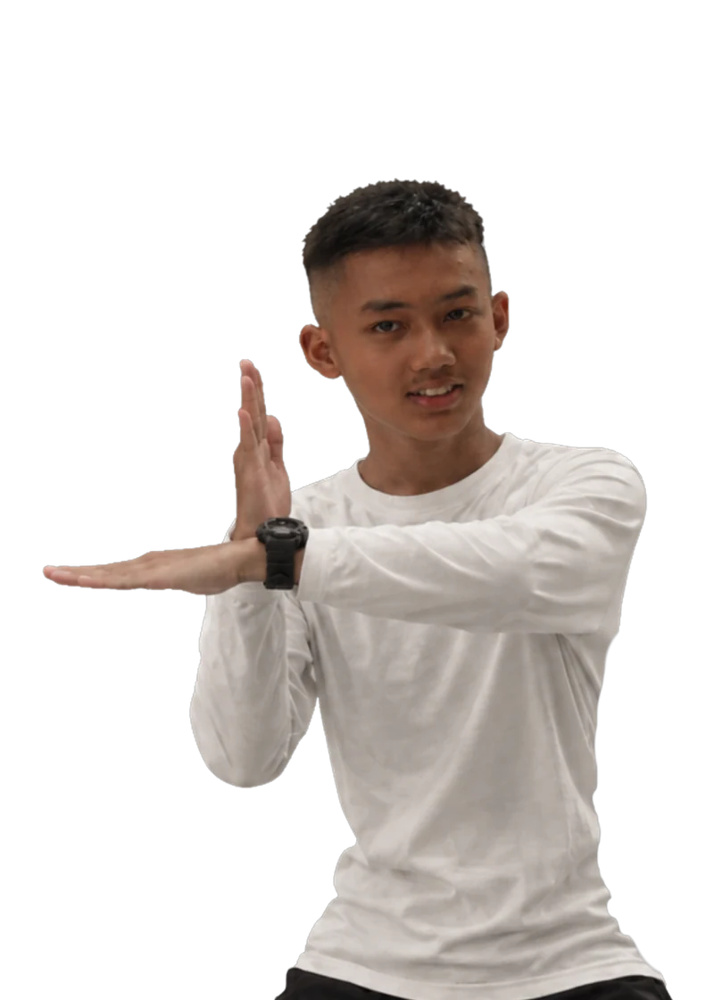
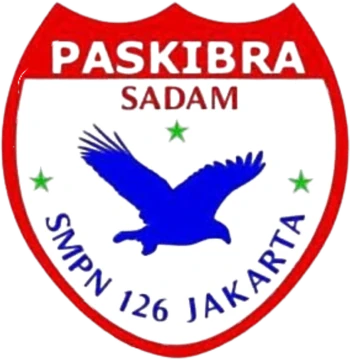
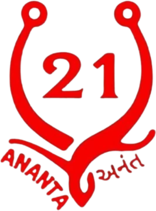

Terbuka untuk proyek website & kolaborasi
Halo, saya Bintang Pamungkas
Mahasiswa Informatika yang suka membangun solusi digital — dari website company profile, desain visual, sampai simulasi 3D interaktif. Berawal dari rasa penasaran, sekarang jadi passion untuk membuat sesuatu yang bukan cuma keren dilihat, tapi juga bermanfaat.
Find me
Tarik & lempar kartunya•ketuk untuk Henshin

Tentang Saya
Hi, I'm
Bintang
Pamungkas Nusantara
Digital Creative Specialist | Web Developer | Informatics
Hubungi SayaArahkan kursor ke fotoKetuk foto — Henshin!
Saya Bintang, mahasiswa Informatika yang sedang menapaki jalan menuju solusi digital yang memadukan teknologi, riset, kreativitas, dan kepedulian lingkungan. Tiga tahun di Pondok Pesantren Al-Tsaqafah membentuk disiplin dan karakter saya.
Saat ini saya fokus pada web development — landing page, company profile, dan solusi web yang cepat serta nyaman dipakai. Di luar itu saya tertarik pada riset lingkungan, penulisan ilmiah, desain visual, dan video editing, termasuk pengalaman di kompetisi karya tulis ilmiah bersama Ecoton tentang mikroplastik.
“Learn deeply. Build boldly. Leave a positive impact.”
Fokus & Keahlian
Creative
Research
Minat
Portofolio
Beberapa karya dan proyek yang pernah saya kerjakan — dari web, simulasi 3D, desain, sampai konten.
511
511 Corporation
Website solusi digital dan gaming: desain grafis, video editing, web development, hingga joki MLBB profesional.
Kunjungi situs ↗3D
Pioneer Craft
Simulator 3D interaktif untuk merakit tongkat pioneering: kontrol kamera, merakit, melepas, dan menjelajahi model.
Coba simulatornya ↗</>
Website Portofolio Pribadi
Portofolio personal yang menampilkan proyek dan keahlian hasil perjalanan belajar pemrograman — lengkap dengan lanyard 3D ini.
Buka ↗Ds
Portofolio Desain Grafis
Kumpulan karya desain visual: poster, infografis, branding, dan konten media sosial.
Lihat di Drive ↗▶
Portofolio Video Editing
Kumpulan hasil editing video: dokumentasi acara, konten sosial media, dan video promosi.
Lihat di Drive ↗@
Content Creator
Karya video editing yang dibagikan di TikTok @b1ntangz sebagai bagian dari portofolio konten kreator.
Tonton ↗Pendidikan & Bootcamp
Pengalaman Organisasi
Beberapa pengalaman organisasi yang membentuk kemampuan kepemimpinan, kerja sama tim, dan tanggung jawab.

2022 – 2023Ketua Ekstrakurikuler PASSADAM
Pasukan Pengibar Bendera · SMPN 126 Jakarta

OSISKetua Bidang Keimanan dan Ketaqwaan
OSIS SMPN 126 Jakarta
- Pramuka
Ketua Bidang Pembinaan dan Latihan
Dewan Ambalan Pramuka Al-Tsaqafah
Hubungi Saya
Punya ide atau butuh website?
Butuh website company profile atau landing page untuk bisnismu? Ngobrol dulu aja — kita cari solusi yang paling pas.
Chat via WhatsApp